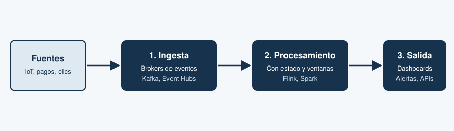

Analítica de Datos: Stream Analytics
Los datos ya no esperan. Sensores IoT, pagos en línea y plataformas masivas generan información cada segundo, y su valor depende de qué tan rápido se actúa sobre ella. A ese intervalo entre que un evento ocurre y que se ejecuta una acción se le llama latencia de decisión. La analítica de flujos (Stream Analytics) es el paradigma que procesa los datos mientras viajan, en lugar de guardarlos primero para analizarlos después.
El problema del procesamiento por lotes
El procesamiento por lotes (Batch Processing) acumula datos en reposo y los analiza después, lo que genera latencias de minutos, horas o incluso días. Eso es inaceptable en casos como detectar el uso de una tarjeta clonada, vigilar un motor industrial o reaccionar a un ataque informático. Pasar a un esquema de flujos exige resolver tres cosas a la vez: baja latencia, resultados correctos y tolerancia a fallos.
De CEP a Kafka y el modelo unificado
El estudio de los datos en movimiento comenzó en los años noventa con el Procesamiento de Eventos Complejos (CEP), pensado para los mercados bursátiles. En 2011 LinkedIn liberó Apache Kafka, que resolvió la ingesta distribuida a gran escala desacoplando a quien produce los datos de quien los consume. Más tarde, Akidau et al. (2018) propusieron un modelo unificado para tratar procesos batch y streaming con las mismas ideas.
Arquitectura de tres capas

- Ingesta (brokers): reciben y distribuyen los eventos, y desacoplan productores de consumidores. Ejemplos: Apache Kafka y Azure Event Hubs.
- Procesamiento: transforma y calcula sobre los eventos al vuelo. Ejemplos: Apache Flink y Spark.
- Salida (sinks): entrega los resultados a tableros en vivo, APIs o almacenamiento.
Conceptos clave
Procesamiento con estado
Un flujo es un conjunto de datos infinito (unbounded). Para recordar contexto entre eventos sucesivos sin saturar una base de datos, el sistema guarda un estado distribuido y persistente.
Ventanas temporales
- Tumbling: ventanas contiguas, de tamaño fijo y sin traslape.
- Hopping o sliding: ventanas de tamaño fijo que se solapan según un intervalo de actualización.
Tiempo de evento y tiempo de procesamiento
El event-time es cuándo ocurrió el hecho en el mundo real; el processing-time es cuándo lo procesa el servidor. Como los datos pueden llegar tarde o desordenados, se usan marcas de agua (watermarks) para decidir hasta cuándo esperar.
Exactly-once
Es la garantía de que cada evento afecte el estado del sistema exactamente una vez, incluso si un nodo falla.
Batch vs. Stream
| Parámetro | Batch | Stream Analytics |
|---|---|---|
| Límite del dataset | Finito (bounded) | Infinito (unbounded) |
| Latencia típica | Minutos a horas | Milisegundos a segundos |
| Almacenamiento previo | Obligatorio (data lake o warehouse) | Opcional (procesamiento en tránsito) |
| Modelo de estado | Sin estado entre ejecuciones | Estado persistente distribuido |
Motores modernos
- Apache Flink: procesa evento por evento (true streaming) con latencias menores a 50 ms. Es ideal para reglas complejas en vivo.
- Spark Structured Streaming: usa micro-lotes y rinde muy bien cuando basta una latencia de segundos.
- Azure Stream Analytics: servicio administrado en la nube con consultas de sintaxis similar a SQL, lo que facilita su adopción.
Casos de uso
- Fraude bancario: se analiza la transacción en menos de 100 ms para bloquearla antes de autorizarla.
- IoT industrial: vibración y temperatura de motores se analizan de forma continua para predecir fallas.
- Recomendaciones: el perfil del usuario se actualiza durante la misma sesión según sus últimos clics.
Conclusiones
El cambio de paradigma no consiste en eliminar el procesamiento por lotes, sino en complementarlo.
Las arquitecturas modernas, como la Kappa, usan un solo motor de flujo que procesa en tiempo real y que además puede reprocesar datos históricos releyendo el registro de eventos. El desacoplamiento mediante brokers es indispensable para soportar picos de volumen sin caídas. A cambio, el streaming exige más complejidad para manejar el estado distribuido y los eventos tardíos. El siguiente paso es su integración con la Inteligencia Artificial Agéntica para sistemas autónomos en tiempo real.
Se recomienda a la industria adoptar estándares abiertos como Kafka y Flink para evitar el bloqueo por proveedor, y para futuras investigaciones realizar benchmarks cuantitativos bajo picos de carga en escenarios IoT.